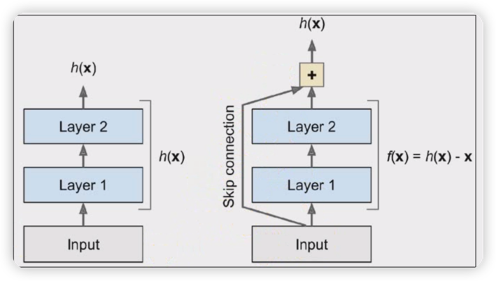

🧠 残差网络 · 正向传播
横向层叠视图
➡️ 前向
🔍 正向传播路径： 输入 \( x \) 经过两条路径 —— 残差函数 \( F(x) \) 和 恒等映射 \( x \) —— 在加法节点汇合，得到输出 \( h(x) \)

⬆ 正向传播：\( x \) → \( F(x) \) + \( x \) → \( x + F(x) \)
✅ 网络实际计算的
\[
h(x) = F(x) + x
\]
网络通过残差函数 \( F(x) \) 学习增量，然后与输入 \( x \) 相加得到输出。
📦 网络只知道这个加法结构，它不关心 \( F \) 和 \( h \) 的代数关系。
📝 我们人类分析的
\[
F(x) = h(x) - x
\]
我们事后推导出“残差” = 输出与输入的差，用来解释网络的学习目标。
📝 这是人类的理解工具，但网络的计算图里 没有减法节点。
📊 正向传播 · 网络计算 vs 人类分析
| 维度 |
网络实际计算的 |
我们人类分析的 |
| 前向公式 |
\( h(x) = F(x) + x \) |
\( F(x) = h(x) - x \) |
| 计算图中存在 |
✅ 加法节点（\( + \)） |
❌ 减法节点（\( - \)） |
| 网络是否知道 |
✅ 知道 \( h = F + x \) |
❌ 不知道 \( F = h - x \) |
| 设计动机 |
让网络学习 \( F(x) \)，输出 \( F(x) + x \) |
解释“残差” = 输出与输入的差 |
🧠 网络只知道 \( h = F + x \)，它不知道 \( F = h - x \)
→ 计算图里有 加法，没有 减法
→ 残差 \( F(x) = h(x) - x \) 是我们人类事后分析出来的，不是网络自己知道的